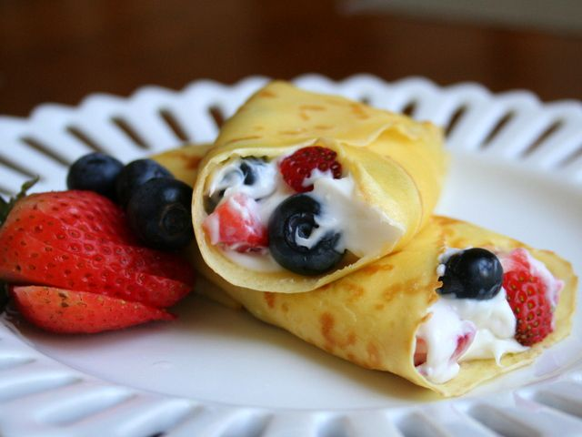

Cheesecake Crepe Roll-Ups

Description
A perfect breakfast treat for brunches, Valentine's Day, breakfast in bed, or Mother's Day.
Ingredients
- 2 tablespoons all-purpose flour
- 2 tablespoons milk
- 2 eggs
- 2 teaspoons honey
- 1 pinch salt
- 2 tablespoons butter, divided
- 1 (8 ounce) package cream cheese, softened
- ½ cup confectioners' sugar
- ¼ cup mixed frozen berries, slightly thawed
- 1 tablespoon confectioners' sugar, or as needed
Steps
- Whisk together the flour, milk, eggs, honey, and salt in a bowl to make a smooth batter.
- Melt 1 tablespoon of butter in a nonstick crepe pan over medium heat until the foam disappears. Pour about 2 tablespoons of the batter into the pan, and swirl to cover the bottom of the pan with a thin layer of batter. Cook until the crepe is no longer runny, about 1 minute; flip and cook the other side for an additional 1 minute. Repeat with additional butter and crepe mix, to make 4 crepes. Set the crepes aside on paper towels.
- In a bowl, mix the cream cheese with 1/2 cup confectioners' sugar to make a creamy spread. Very gently stir in the berries. Spread the cream cheese filling evenly over the crepes and roll up. Refrigerate until chilled; slice in 1-inch sections to serve.
Home